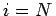

Inhalt Index DeskTop Bronstein

 Numerische Mathematik Darstellung von Kurven und Flächen mit Hilfe von Splines Kubische Splines Interpolationssplines
Numerische Mathematik Darstellung von Kurven und Flächen mit Hilfe von Splines Kubische Splines Interpolationssplines


Für den kubischen Interpolationsspline S(x) wird für der Ansatz
gemacht. Die Länge der Teilintervalle wird mit hi = xi+1-xi bezeichnet. Zur Bestimmung der Ansatzkoeffizienten für den natürlichen Spline kann man wie folgt vorgehen:
Aus den natürlichen Randbedingungen folgt , und (19.233) gilt auch für , wenn man cN einführt und cN = 0 setzt.
| (19.236) |
Die Koeffizientenmatrix ist tridiagonal, so daß sich das Gleichungssystem (19.235) durch LR-Zerlegung sehr einfach numerisch lösen läßt. Aus den Koeffizienten ci erhält man über (19.234) und (19.233) die restlichen Koeffizienten.